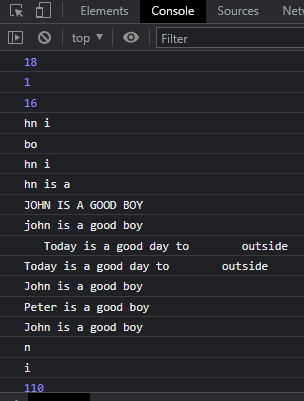

var line = "John is a good boy";
console.log(line.length);
console.log(line.indexOf("o")); //finds the 1st occurence of the item
console.log(line.lastIndexOf("o")); //finds the last occurence of the item
console.log(line.slice(2, 6));//1st index(2nd) included; last index(6th) excluded; slice allows negative index
console.log(line.substring(2, 6));//hn i becz the last index is not included(here its 6th index)
console.log(line.substr(2, 7)); //2nd parameter is length, here it means 7 characters starting from index 2 and including index 2
console.log(line.toUpperCase());
console.log(line.toLowerCase());
var data = " Today is a good day to outside ";
console.log(data);
console.log(data.trim()); //removes leading and trailing spaces
console.log(line);
var result = line.replace("John", "Peter");//does not change the original string
console.log(result);
console.log(line);
console.log(line.charAt(3));//3rd index
console.log(line[5]);
console.log(line.charCodeAt(3));//3rd index item's UTF code
